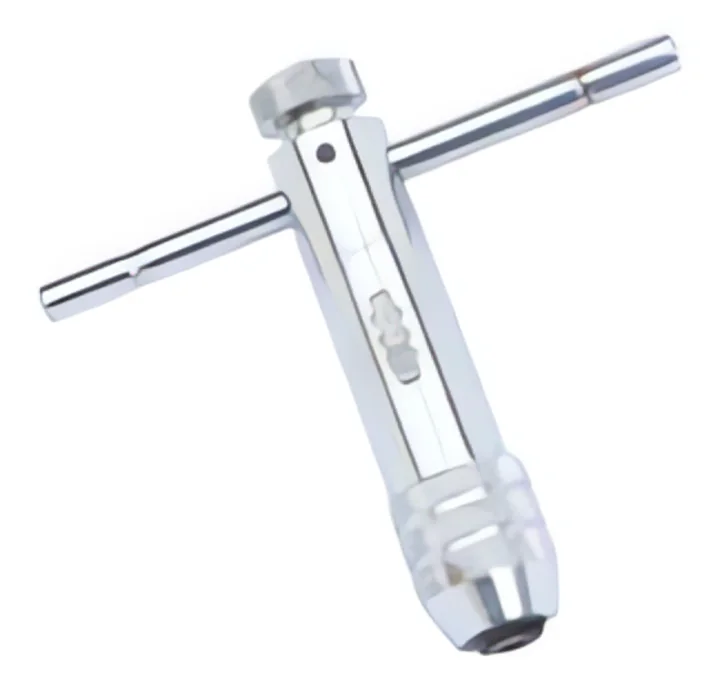

GROZ · Taps, Dies & Holders
Tap Wrenches T Handle
CAT NR TW/1-2 · ORD NR 09304
| CAT NR (catalogue number) | TW/1-2 |
|---|---|
| ORD NR (order number) | 09304 |
| Box quantity | 50 |
| Jaw holding capacity square size (inch) | 13/64 – 5/16 |
| Jaw holding capacity square size (mm) | 5 – 8 |
| Jaw holding capacity tap size (inch) | 1 /4 – 1/2 |
| Jaw holding capacity tap size (mm) | M6 – M10 |
| Overall length (L) (inch) | 3.35/64 |
| Overall length (L) (mm) | 90 |
| Table section | REGULAR |
Ask for a quote The catalogue PDF, page 232
“Ask for a quote” opens this product in the catalogue: add it to your quote and send it. Buyers from Africa, the Gulf and worldwide are welcome; prices in USD, EUR or INR.
From the GROZ Workshop Tools CB-05 catalogue. Not yet verified: these details were read from the printed catalogue automatically; check the catalogue page before ordering.